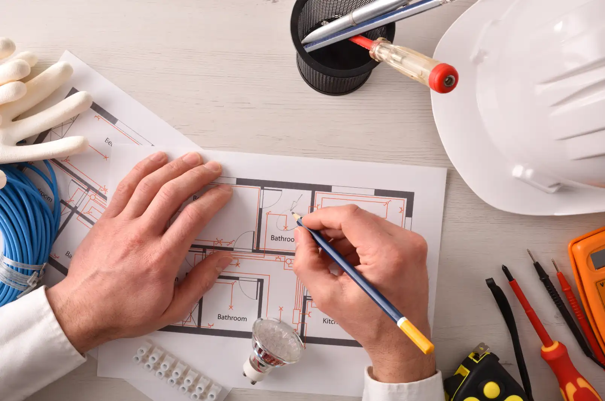

Reforma elétrica
Saiba quando e como executá-la!

O processo se trata de um conjunto de reparos feitos no sistema elétrico. Pode começar com uma simples revisão para conferir se existe algum ponto precisando de conserto.
Em seguida, essa reforma pode incluir troca dos fios, dos conduítes, das tomadas e até dos disjuntores ou de todo o quadro elétrico.Cada caso é um, mas é válido se atentar às orientações para saber qual é a necessidade em cada local. Você verá isso mais abaixo.
Sinais de que está na hora de fazer uma reforma elétrica
Nem sempre é fácil enxergar problemas nas instalações, pois muitos fios ficam dentro das paredes, impedindo a visualização. Por isso, contar com um profissional eletricista costuma ser bem importante para ter uma opinião especializada.
Porém, existem sinais que podem ser percebidos. É essencial que, ao menor deles, se tenha o cuidado de averiguar.
Os principais indicadores de que possa estar chegando a hora de fazer uma reforma elétrica são:
Presença de fios descascados, com o interior aparente em algum local da casa. É muito perigoso ter contato com os fios desprotegidos, pois podem dar choque. Cabos desencapados também podem tocar uns nos outros, provocando curtos-circuitos e até algo pior
Equipamentos ou tomadas esquentando demais, são sinais de que algo pode estar errado com a corrente elétrica. É bom sempre consultar um profissional para verificar se ela está adequada.
Disjuntores caindo com frequência,, especialmente quando você liga itens como torneira elétrica ou ar-condicionado, que são de resistência ou que puxam mais energia, podem indicar que o sistema é insuficiente para a demanda.
Cheiros estranhoscomo o de algo queimando são sérios sinalizadores de que alguns elementos podem estar entrando em curto no sistema elétrico. Além do risco de acidentes, você pode perder aparelhos ligados à tomada.
Passo a passo para a reforma elétrica
1-Identificação do problema e diagnóstico
O primeiro passo é fazer uma vistoria nas instalações elétricas tomando cuidado com a segurança. Abrir o quadro elétrico, verificar as tomadas e a fiação, medir a corrente e visualizar se alguma peça está danificada são exemplos de ações.
Também é importante conhecer o tempo das instalações. Pode ser que você não tenha acompanhado a construção da casa e, por isso, não tenha como saber exatamente há quantos anos ela existe, mas em geral, a cada 5 anos, uma revisão é recomendada.
Se o imóvel tiver mais de 30 anos, porém, é provável que o sistema elétrico já precise ser refeito. Nesse caso, conte com um engenheiro.
2-Substituição de peças
Detectados os problemas, é preciso fazer substituições de peças. O disjuntor precisa ser desligado antes desse procedimento.
Em seguida, é necessário remover, no caso de tomadas, a placa do interruptor (o que requer algumas ferramentas, como a chave de fenda). Desligar o disjuntor geral é mais seguro, mas é recomendado sempre contar com um eletricista.
Além disso, pode ser que, durante o reparo, ele veja algum outro alerta ao qual você não se atentaria. Essa cautela evita também que você adquira peças desnecessárias ou inapropriadas.
3-Teste de desempenho
Com as peças consertadas, é hora de testar se tudo está ok. Todas as proteções precisam ser recolocadas antes de o disjuntor ser ligado novamente, e é preciso se certificar de que tudo foi instalado de acordo.
Novamente um profissional na área pode não só garantir que isso seja feito da melhor forma, como também medir a corrente elétrica com precisão. Nesse sentido, o multímetro é um instrumento que permite fazer o teste de voltagem. Pode acontecer de alguma adaptação precisar ser feita para que aparelhos não sejam queimados.